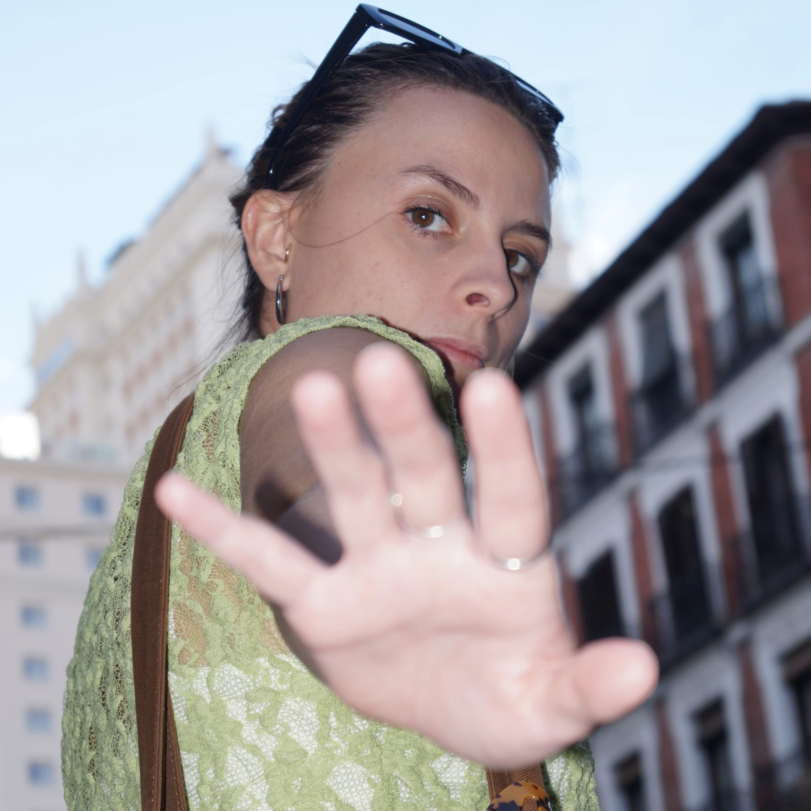
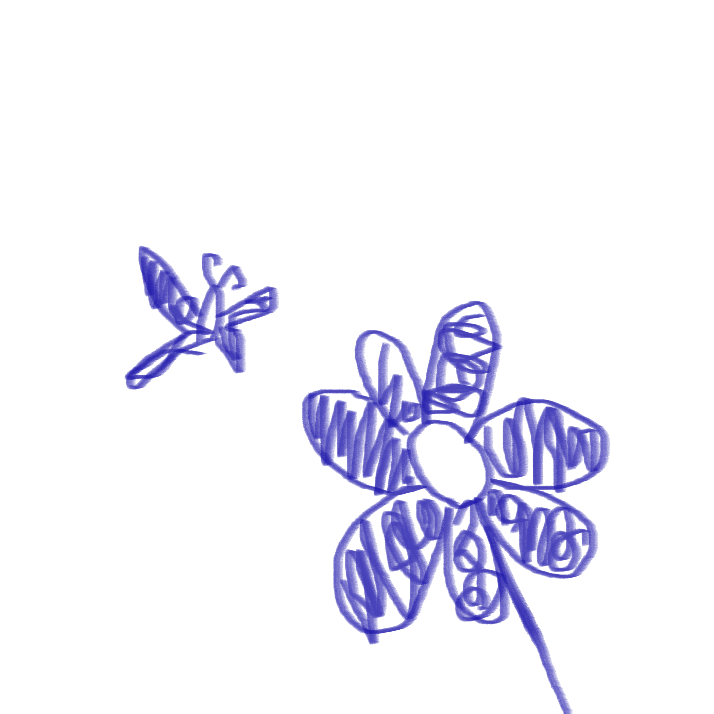

beatriz
montes
Disenadora grafica e ilustradora. Trabajo con identidades, editorial, motion y sistemas visuales para marcas y proyectos que quieren moverse con personalidad.


quien soy
Soy Beatriz Montes Gijon, una creative partner para companias, marcas y proyectos culturales que deciden avanzar. Mi trabajo cruza estrategia visual, composicion, tipografia e ilustracion para construir piezas con caracter.
que hago
- Identidad visual
- Diseno editorial
- Motion graphics
- Ilustracion
- Direccion visual para marcas y proyectos culturales
como trabajo
Me interesa crear sistemas que puedan crecer: piezas con una idea clara, una voz reconocible y suficientes reglas para mantenerse vivas en distintos formatos.
visual systems with a point of view